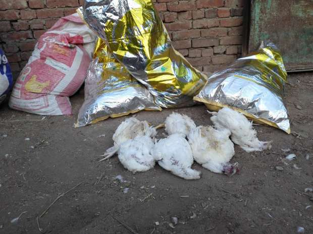
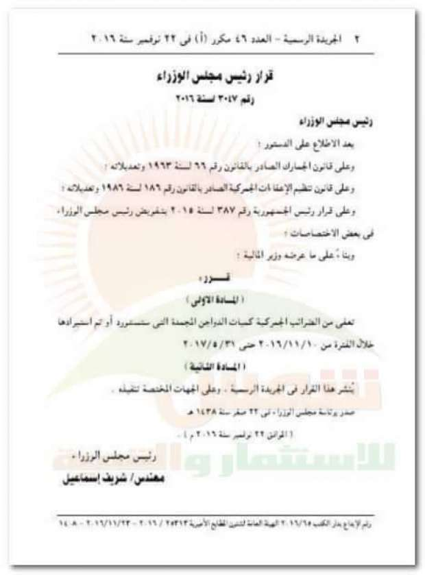
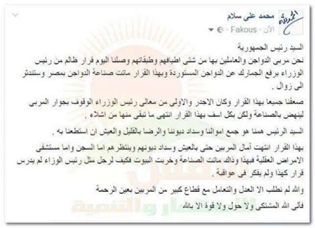

أحدث الأخبار
- القضاء الإداري يقضي بحل اتحاد الكرة وبطلان الانتخابات الأخيرة
- مقتل 3 أشخاص وإصابة 3 آخرين في حادث مروري بالبحيرة
- وزير الخارجية يجري اتصالاً مع رئيس المجلس الرئاسي الليبي
- عاصمة مصر تتجه لزيادة سكانية نصف مليون العام الجاري
- باولو يقود هجوم الزمالك أمام رينجرز في دوري الأبطال
- المالية تعفي المطاعم غير السياحية من ضريبة القيمة المضافة بشروط
- "القضاء الإداري" يلزم الجامعة الأمريكية بتحصيل مصروفاتها بالجنيه المصري
- البورصة ترتفع بنسبة 0.52% في نهاية التعاملات
بقرار واحد.. رئيس الوزراء "يذبح" مليار دجاجة ومليوني عامل
مزرعة دجاج..صورة لأصوات مصرية 28/11/2016
يواجه قطاع مزارع الدواجن في مصر، العديد من التحديات التي تؤثر علي إنتاجيتها، والتي قد تؤدي إلى انهيارها.
أحدث تلك التحديات كان قرار رئيس الوزراء، شريف إسماعيل، الذي صدر أول أمس الإثنين، بإعفاء الدواجن المجمدة المستوردة، من الضرائب الجمركية خلال الفترة من 10 نوفمبر الجاري، وحتى نهاية مايو 2017، مما يشكل "سكيناً" قد يتسبب في ذبح صانعي الدجاج في مصر، وفقاً لتصريحات رئيس الاتحاد العام لمنتجي الدواجن.
وتواجه صناعة الدجاج مشاكل كثيرة منها، انتشار فيروس إنفلونزا الطيور المتوطن بمصر منذ عام 2006، والارتفاع الحاد في أسعار الأعلاف واستمرار دفع جمارك على المستورد منها، بالإضافة إلى ارتفاع سعر الطاقة حيث تعامل الحكومة مزارع ومجازر الدواجن على أنها منشآت صناعية.
ويصل حجم إنتاج الدواجن في مصر سنوياً، وفقاً لتقرير صادر عن الغرف التجارية إلى مليار دجاجة، وبحجم استثمارات يتجاوز 25 مليار جنيه، ويعمل بها أكثر من 2 مليون عامل، ويصل عدد أفراد أسرهم ما بين 6 إلى 8 ملايين فرد، أي عشر سكان القطر المصري تقريبا.
وقدمت لجنة الزراعة بالبرلمان أمس طلب إحاطة لوزير الزراعة واعتبرت قرار إعفاء الدواجن المجمدة المستوردة من الضرائب الجمركية "عشوائياً"، كذلك رفضته شعبة الثروة الداجنة بغرفة القاهرة التجارية والاتحاد العام للإنتاج الداجني.
"أصوات مصرية" قامت بجولة ميدانية في بعض مزارع الدجاج، للتعرف على رد فعل العاملين في الصناعة على القرار وتأثيره عليهم. وشملت الجولة قرى "نكلا وأبو غالب وبرقاش" بمحافظة الجيزة.

دجاج نافق..صورة لأصوات مصرية 28/11/2016
إبادة جماعية
في قرية أبو غالب والمشتهرة بمزارع الدجاج، اشتكى العديد من أصحاب المزارع من ارتفاع أسعار الأعلاف والمستلزمات وقرار الحكومة الأخير بإعفاء المستوردين من الجمارك، مقابل ترك جمارك الأعلاف كما هي، معتبرين أن الدولة تبيد بتلك القرارات صناعة الدواجن إبادة جماعية.
محمد خميس، صاحب مزرعة الحمد بقرية أبو غالب، يقول إن تكلفة تربية الدواجن في مصر ارتفعت بنسبة 60% تقريباً، في المقابل لم يزد سعر كيلو الدجاج بنفس النسبة، مما أدى إلى خسائر فادحة، حيث كان سعر طن العلف من 3 إلى 4 آلاف جنيه، وأصبح الآن من 6 إلى 7 آلاف جنيه، "وإذا أضفنا إلى ذلك زيادة أسعار الكهرباء والغاز الذي يستخدم في تدفئة الدجاج، والنشارة والأعلاف والدجاج النافق حتماً ستكون خسارتنا عظيمة".
يسترسل خميس قائلاً إن "تربية ألف دجاجة يستلزم قرابة 33 ألف جنيه تقريباً، نفقد منها قرابة 10% يتبقى 900 دجاجة، ويخرج منها قرابة 50 "سرد" (الدجاج متوسط الجودة) يتبقى 850، وزن الواحدة منها قرابة 2 كيلو، أي أن مجموع الكل 1700 كيلو، إذا ضربنا هذا الناتج في سعر كيلو الدجاج كما تضعه بورصة الدواجن، فإن الناتج سيكون 27 ألف جنيه تقريباً، أي أننا نخسر في كل ألف دجاجة حوالي ستة آلاف جنيه".
اتفق معه محمد حسين، مشرف عام على مزارع دواجن مركز مُنشأة القناطر وصاحب مزرعة في قرية "نكلا"، حيث قال إن "ما أراه من ارتفاع أسعار الأعلاف وقرار الحكومة الخاص بإعفاء مستوردي الدواجن المجمدة من الجمارك، مجحف لنا جميعاً، حيث ارتفاع نسبة النافق مع قدوم الشتاء، ومهاجمة أنفلونزا الطيور للدواجن، وارتفاع أسعار الأدوية للضعف أو أزيد، إلى جانب ارتفاع سعر المحروقات، فقد كان لتر الجاز بـ185 قرشًا، وأصبح 235 قرشًا، وأنبوبة الغاز كانت بـ12 جنيهاً، أصبحت 25 جنيهاً ولا نجدها، بالإضافة لدخول فصل الشتاء وتعرض الدجاج لأمراض الأي بي، والنيو كاسيل، والإنفلونزا".
ويضيف حسين، "إذا فتحت الدولة مجال الاستيراد بدون مصروفات جمركية، ستتسبب في إغلاق مزارعنا وتشريد مئات الآلاف من العمال، نظراً لأن المزارع تقوم بتشغيل عمال في مجالات عدة، كالنشارة، والأعلاف، والأدوية، وتجار الكتاكيت".
وقال حازم فتحي، مشرف على مزرعة في قرية برقاش، إن "الكثير من الناس لا يعلمون ما نفعله لمواجهة الغلاء الفاحش الذي ضرب السوق المصري بما فيه الأعلاف وما تقوم عليه صناعة الدواجن، والبعض يسأل، لماذا نستمر في تلك المهنة رغم خسائرها الفادحة، ببساطة لأننا لا نعرف غيرها، ولأننا نعمل على أمل تحسن الأمور وتعويضنا عن تلك الخسائر، فعلياً لم تعد تلك المهنة تأتي بعائد على العاملين بها منذ عام 2006 وانتشار انفلونزا الطيور بمصر، نرجو من الحكومة النظر إلينا بعين الرحمة، وألا تُطلق رصاصها على أدمغتنا، وإلا انتهت المهنة".

قرار إعفاء المستوردين من الجمارك..صورة من صفحة اتحاد صانعي الدجاج على فيس بوك
قرارات غير مسؤولة
من جانبه انتقد نبيل درويش، رئيس اتحاد منتجي الدواجن، قرار رئيس الوزراء بإعفاء المستوردين من المصاريف الجمركية، قائلاً إن "صدور تلك القرارات بهذا الشكل وفي هذا التوقيت غير موفق، وهي قرارات غير مسؤولة، لأنها ستؤدي إلى القضاء على صناعة الدواجن بمصر، وتشريد ما يزيد على مليوني عامل بتلك المهنة، كذلك ستؤدي لخسائر فادحة في أموال أصحاب المزارع والجزارين والأنشطة التجارية المتعلقة بتلك المهنة كصناعة الأعلاف والتبييض والنشارة".
وقال درويش "لدينا خسائر كبيرة ونسبة الفاقد مرتفعة، وغالبية المزارع غير مرخصة، لعدم تسهيل وزارة الزراعة إجراءات تراخيص المزارع .. القرار معيب ولم نر قبل ذلك قرارا يصدر بأثر رجعي، بحيث يعفي من استورد بالفعل من أول نوفمبر الحالي".
وأضاف درويش "كثيراً ما صرح الرئيس عبد الفتاح السيسي بضرورة تشجيع المنتج المصري، وفي لقائه بنا كرر ذلك مراراً، والآن تأتي قرارات الحكومة مخالفة لذلك بل وتغري المستورد بإعفائه من مصاريف الجمارك".
وأشار درويش إلى أن الاتحاد في انعقاد دائم لبحث خسائر المزارعين، وأن بعض المنتجين يهدد بعمل وقفات احتجاجية لا يستطيع التحكم بها، موضحاً أن صناعة الدواجن اهتزت بالفعل بغلاء الأسعار وستنهار حال تنفيذ قرار الحكومة الخاص بالمستوردين، "خلافاً لما كنا ننتظره من الدولة من دعمها لنا، خاصة وأننا في بداية فصل الشتاء وانتشار أمراض الدجاج وكثرة عدد الفاقد".

رسالة صانعي الدواجن للرئيس السيسي..صورة من فيس بوك
ثورة فيس بوك
تزامن إصدار رئاسة الوزراء قرار إعفاء الدواجن المستودة من الجمارك، مع دعوات على موقع التواصل الإجتماعي "فيس بوك" لوقفة احتجاجية يوم 12 ديسمبر أمام وزارة الزراعة.
وقال عمر شلتوت، من صانعي الدواجن، "إن رئيس الوزراء يحاربنا في أرزاقنا، وبدلاً من تسهيل الأمر علينا زاده صعوبة، فلمصلحة من يفعل ذلك، خاصة وأن اتحاد منتجي الدواجن أعلن عن شراء الإنتاج المحلي من الذرة الصفراء".
وأضاف سعيد محمود، أحد منتجي الدواجن، على صفحته الشخصية بموقع فيس بوك انه "ستكون لوقفتنا مطالب على رأسها إقالة وزير الزراعة، وإلغاء قرار رفع الجمارك عن صادرات الدواجن المجمدة، ورفع الجمارك عن استيراد الذرة والصويا، وتوفير الدولار لمن يتوفر به شروط استيراد الخامات."
سبب القرار مجهول
انتقد عبد العزيز السيد، رئيس شعبة الثروة الداجنة بغرفة القاهرة التجارية، قرار إعفاء استيراد الدواجن من التعريفة الجمركية، قائلاً "فوجئنا بالقرار، وليس له أسباب حقيقية على أرض الواقع يمكن من أجلها القبول به، مثل تفشي وباء ما".
وأضاف "نريد معرفة السبب وراء إصدار ذلك القرار المجهول ولماذا صدر بأثر رجعي، فالحكومة تستورد بدون تعريفة جمركية سواء الشركة القابضة أو القوات المسلحة، في عام 2006 ألغت الحكومة التعريفة الجمركية لتفشي الانفلونزا ولم نعترض فلمَ تفعل ذلك الآن وكل شيء مستقر، من حيث أسعار الدجاج فهو السلعة الوحيدة التي لم يزد سعرها تقريباً رغم ارتفاع مستلزمات الإنتاج الداجني".
وطالب السيد الحكومة بضرورة إلغاء هذا القرار، وإلغاء التعريفة الجمركية عن الأعلاف، والتوسع في إنتاج اللقاح وزراعة الذرة الصفراء والصويا.
طلب إحاطة
وقال السيد حسن وكيل لجنة الزراعة بالبرلمان، إن اللجنة ضد قرار مجلس الوزراء، لتسببه بمشاكل كثيرة للعاملين في صناعة الدجاج، "ولن نوافق عليه تحت أي ظرف .. نحن ضد هذا القرار الذي سيدمر تلك الصناعة ولا نوافق عليه بأي ظرف وهناك حالة استياء عامة من البرلمان من هذا القرار"، مشيراً الى أن اللجنة قدمت أمس طلب إحاطة لوزير الزراعة، "وسيأتي الوزير للبرلمان وسنناقشه فيه، فلا نريد عشوائية في إصدار القرارات".
6 أشهر فقط
قال حامد عبد الدايم المتحدث الإعلامي لوزارة الزراعة، إن علاقتنا بصناعة الدواجن تنحصر في الإشراف على مزارعها، عن طريق الهيئة العامة للخدمات البيطرية، وكذلك توفير ما تستلزمه تلك الصناعة من توفير أعلاف.
وأكد عبد الدايم في تصريح خاص "لأصوات مصرية" على أن ما يتردد بأن قرار مجلس الورزاء سيتسبب في تدمير صناعة الدواجن في مصر، ليس له أساس من الصحة حيث أن قرار الإعفاء محدد بستة أشهر فقط، ولدينا عجز في إنتاج الدواجن قرابة 10% تقريباً.


{kind=link}
تعليقات الفيسبوك